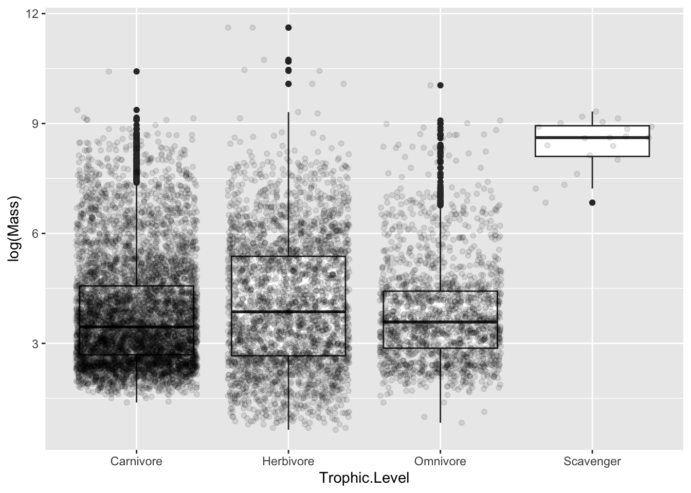
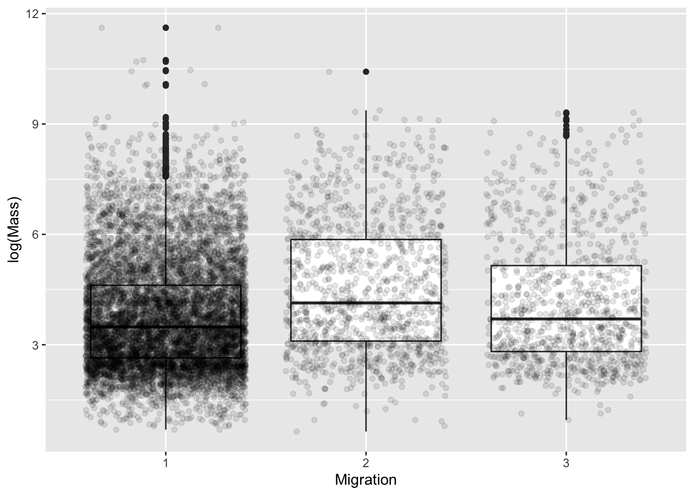
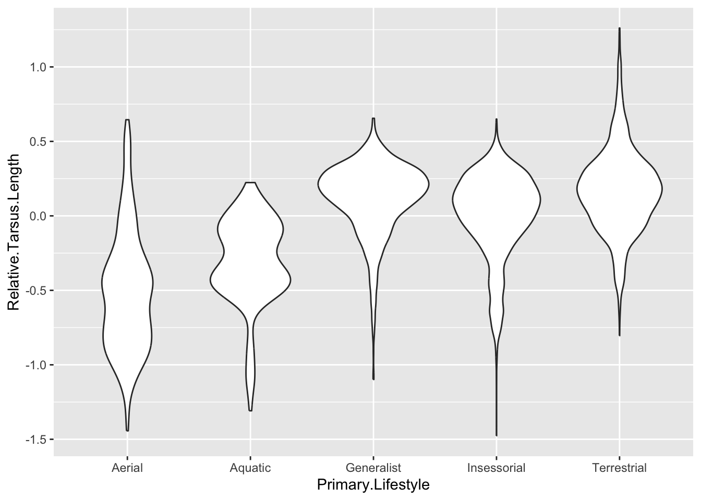
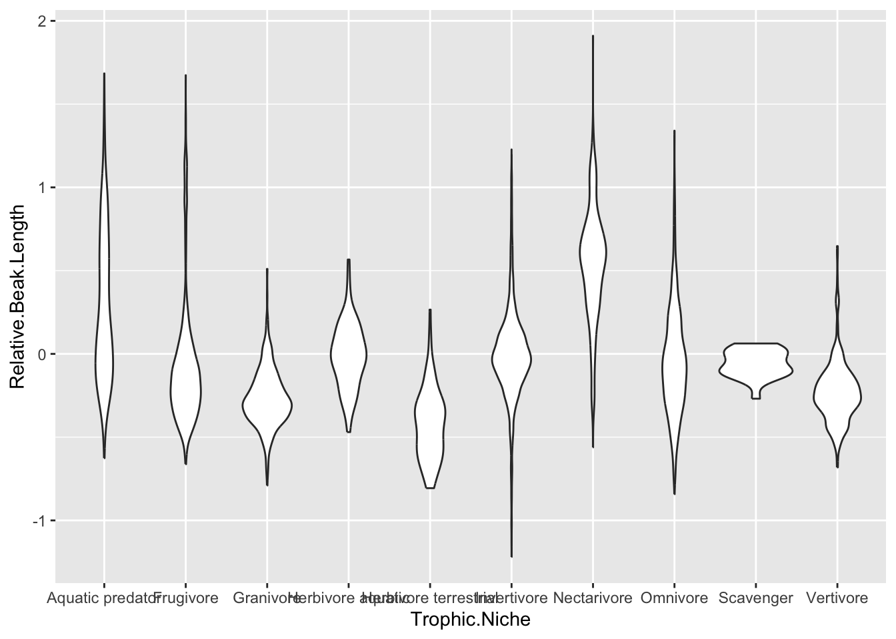
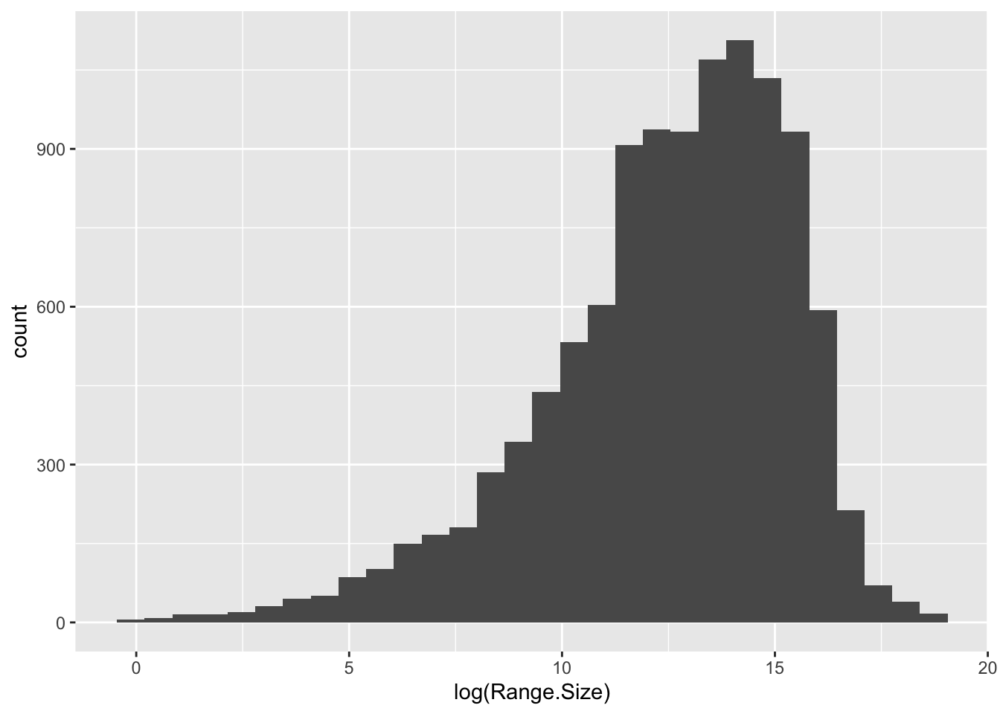
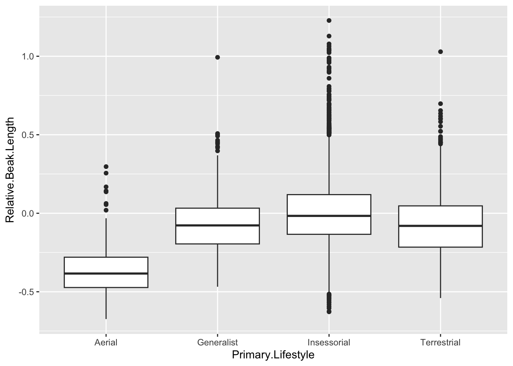
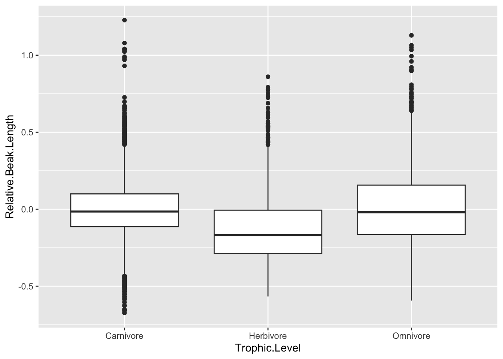
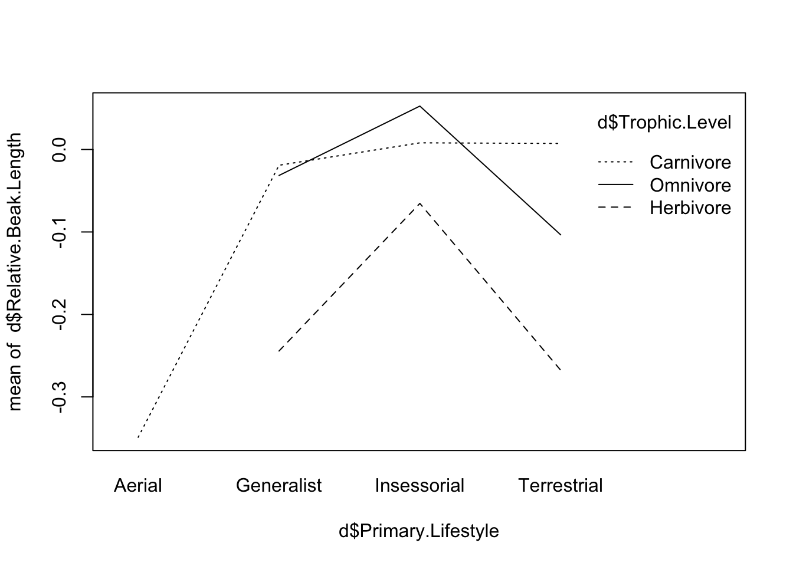
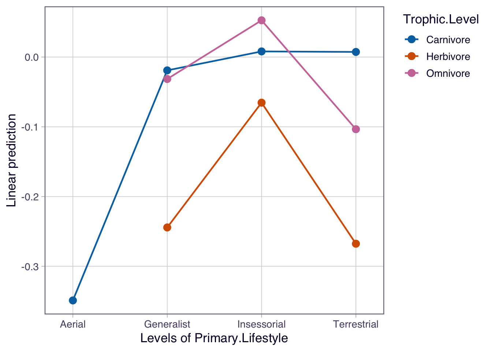

library(tidyverse)── Attaching core tidyverse packages ──────────────────────── tidyverse 2.0.0 ──
✔ dplyr 1.1.4 ✔ readr 2.1.6
✔ forcats 1.0.1 ✔ stringr 1.6.0
✔ ggplot2 4.0.2 ✔ tibble 3.3.0
✔ lubridate 1.9.4 ✔ tidyr 1.3.1
✔ purrr 1.2.0
── Conflicts ────────────────────────────────────────── tidyverse_conflicts() ──
✖ dplyr::filter() masks stats::filter()
✖ dplyr::lag() masks stats::lag()
ℹ Use the conflicted package (<http://conflicted.r-lib.org/>) to force all conflicts to become errorslibrary(broom)
library(cowplot)
Attaching package: 'cowplot'
The following object is masked from 'package:lubridate':
stamplibrary(mosaic)Registered S3 method overwritten by 'mosaic':
method from
fortify.SpatialPolygonsDataFrame ggplot2
The 'mosaic' package masks several functions from core packages in order to add
additional features. The original behavior of these functions should not be affected by this.
Attaching package: 'mosaic'
The following object is masked from 'package:Matrix':
mean
The following object is masked from 'package:cowplot':
theme_map
The following objects are masked from 'package:dplyr':
count, do, tally
The following object is masked from 'package:purrr':
cross
The following object is masked from 'package:ggplot2':
stat
The following objects are masked from 'package:stats':
binom.test, cor, cor.test, cov, fivenum, IQR, median, prop.test,
quantile, sd, t.test, var
The following objects are masked from 'package:base':
max, mean, min, prod, range, sample, sumlibrary(ggExtra)
library(skimr)
Attaching package: 'skimr'
The following object is masked from 'package:mosaic':
n_missinglibrary(sjPlot)
Attaching package: 'sjPlot'
The following objects are masked from 'package:cowplot':
plot_grid, save_plot
The following object is masked from 'package:ggplot2':
set_themelibrary(emmeans)Welcome to emmeans.
Caution: You lose important information if you filter this package's results.
See '? untidy'# importing data
f <- "https://raw.githubusercontent.com/difiore/ada-datasets/refs/heads/main/AVONETdataset1.csv"
d <- read_csv(f, col_names = TRUE)Rows: 11009 Columns: 37
── Column specification ────────────────────────────────────────────────────────
Delimiter: ","
chr (13): Species1, Family1, Order1, Avibase.ID1, Mass.Source, Mass.Refs.Oth...
dbl (24): Sequence, Total.individuals, Female, Male, Unknown, Complete.measu...
ℹ Use `spec()` to retrieve the full column specification for this data.
ℹ Specify the column types or set `show_col_types = FALSE` to quiet this message.# winnowing
d <- d |>
select(Species1, Family1, Order1, Beak.Length_Culmen, Beak.Width, Beak.Depth, Tarsus.Length, Wing.Length, Tail.Length, Mass, Habitat, Migration, Trophic.Level, Trophic.Niche, Primary.Lifestyle, Min.Latitude, Max.Latitude, Centroid.Latitude, Range.Size)
skim(d)| Name | d |
| Number of rows | 11009 |
| Number of columns | 19 |
| _______________________ | |
| Column type frequency: | |
| character | 7 |
| numeric | 12 |
| ________________________ | |
| Group variables | None |
Variable type: character
| skim_variable | n_missing | complete_rate | min | max | empty | n_unique | whitespace |
|---|---|---|---|---|---|---|---|
| Species1 | 0 | 1.00 | 9 | 36 | 0 | 11009 | 0 |
| Family1 | 0 | 1.00 | 7 | 18 | 0 | 243 | 0 |
| Order1 | 0 | 1.00 | 10 | 19 | 0 | 36 | 0 |
| Habitat | 98 | 0.99 | 4 | 14 | 0 | 11 | 0 |
| Trophic.Level | 5 | 1.00 | 8 | 9 | 0 | 4 | 0 |
| Trophic.Niche | 10 | 1.00 | 8 | 21 | 0 | 10 | 0 |
| Primary.Lifestyle | 0 | 1.00 | 6 | 11 | 0 | 5 | 0 |
Variable type: numeric
| skim_variable | n_missing | complete_rate | mean | sd | p0 | p25 | p50 | p75 | p100 | hist |
|---|---|---|---|---|---|---|---|---|---|---|
| Beak.Length_Culmen | 0 | 1.00 | 26.36 | 24.39 | 4.50 | 14.70 | 19.90 | 28.50 | 414.20 | ▇▁▁▁▁ |
| Beak.Width | 0 | 1.00 | 6.58 | 5.15 | 0.70 | 3.60 | 5.00 | 7.70 | 88.90 | ▇▁▁▁▁ |
| Beak.Depth | 0 | 1.00 | 8.06 | 7.59 | 1.00 | 3.80 | 5.80 | 9.40 | 110.90 | ▇▁▁▁▁ |
| Tarsus.Length | 0 | 1.00 | 28.73 | 24.84 | 2.50 | 17.40 | 22.00 | 31.30 | 481.20 | ▇▁▁▁▁ |
| Wing.Length | 0 | 1.00 | 124.78 | 93.44 | 0.10 | 66.80 | 91.50 | 145.50 | 789.90 | ▇▂▁▁▁ |
| Tail.Length | 0 | 1.00 | 86.65 | 61.08 | 0.10 | 50.20 | 68.70 | 99.90 | 812.80 | ▇▁▁▁▁ |
| Mass | 0 | 1.00 | 267.15 | 1883.03 | 1.90 | 15.00 | 35.50 | 121.00 | 111000.00 | ▇▁▁▁▁ |
| Migration | 23 | 1.00 | 1.29 | 0.62 | 1.00 | 1.00 | 1.00 | 1.00 | 3.00 | ▇▁▁▁▁ |
| Min.Latitude | 57 | 0.99 | -6.44 | 22.37 | -85.58 | -21.22 | -7.15 | 8.07 | 68.08 | ▁▃▇▃▁ |
| Max.Latitude | 57 | 0.99 | 11.51 | 23.32 | -65.12 | -3.33 | 9.00 | 22.07 | 85.01 | ▁▃▇▂▁ |
| Centroid.Latitude | 57 | 0.99 | 2.95 | 22.07 | -71.04 | -9.73 | -0.22 | 15.28 | 78.43 | ▁▃▇▂▁ |
| Range.Size | 57 | 0.99 | 2578859.38 | 7629310.06 | 0.88 | 54052.87 | 416076.61 | 2187040.21 | 136304432.20 | ▇▁▁▁▁ |
# filtering out NA values
d <- d|> filter(!is.na(Trophic.Level))
d <- d|> filter(!is.na(Migration))
# converting numerical value for migration to factor
d <- d |> mutate(Migration = as.factor(Migration))
# making boxplots for log mass by trophic level and migration
p1 <- d |>
ggplot(aes(x = Trophic.Level, y = log(Mass))) +
geom_boxplot() +
geom_jitter(alpha = 0.1)
p1
p2 <- d |>
ggplot(aes(x = Migration, y = log(Mass))) +
geom_boxplot() +
geom_jitter(alpha = 0.1)
p2
# making linear models
m1 <- lm(log(Mass) ~ Trophic.Level, data = d)
summary(m1)
Call:
lm(formula = log(Mass) ~ Trophic.Level, data = d)
Residuals:
Min 1Q Median 3Q Max
-3.4230 -1.1559 -0.3047 0.9004 7.5525
Coefficients:
Estimate Std. Error t value Pr(>|t|)
(Intercept) 3.80916 0.01970 193.354 < 2e-16 ***
Trophic.LevelHerbivore 0.25566 0.03410 7.498 6.96e-14 ***
Trophic.LevelOmnivore 0.01410 0.04122 0.342 0.732
Trophic.LevelScavenger 4.63107 0.34467 13.436 < 2e-16 ***
---
Signif. codes: 0 '***' 0.001 '**' 0.01 '*' 0.05 '.' 0.1 ' ' 1
Residual standard error: 1.539 on 10982 degrees of freedom
Multiple R-squared: 0.02091, Adjusted R-squared: 0.02064
F-statistic: 78.18 on 3 and 10982 DF, p-value: < 2.2e-16m2 <- lm(log(Mass) ~ Migration, data = d)
summary(m2)
Call:
lm(formula = log(Mass) ~ Migration, data = d)
Residuals:
Min 1Q Median 3Q Max
-3.8924 -1.1769 -0.3088 0.9152 7.8427
Coefficients:
Estimate Std. Error t value Pr(>|t|)
(Intercept) 3.77457 0.01636 230.710 < 2e-16 ***
Migration2 0.75971 0.04731 16.059 < 2e-16 ***
Migration3 0.37647 0.05155 7.303 3.02e-13 ***
---
Signif. codes: 0 '***' 0.001 '**' 0.01 '*' 0.05 '.' 0.1 ' ' 1
Residual standard error: 1.535 on 10983 degrees of freedom
Multiple R-squared: 0.02563, Adjusted R-squared: 0.02546
F-statistic: 144.5 on 2 and 10983 DF, p-value: < 2.2e-16# releveling to test differences
m3 <- lm(log(Mass) ~ relevel(as.factor(Migration), ref = "2"), data = d)
summary(m3)
Call:
lm(formula = log(Mass) ~ relevel(as.factor(Migration), ref = "2"),
data = d)
Residuals:
Min 1Q Median 3Q Max
-3.8924 -1.1769 -0.3088 0.9152 7.8427
Coefficients:
Estimate Std. Error t value Pr(>|t|)
(Intercept) 4.53428 0.04439 102.149 < 2e-16
relevel(as.factor(Migration), ref = "2")1 -0.75971 0.04731 -16.059 < 2e-16
relevel(as.factor(Migration), ref = "2")3 -0.38324 0.06603 -5.804 6.67e-09
(Intercept) ***
relevel(as.factor(Migration), ref = "2")1 ***
relevel(as.factor(Migration), ref = "2")3 ***
---
Signif. codes: 0 '***' 0.001 '**' 0.01 '*' 0.05 '.' 0.1 ' ' 1
Residual standard error: 1.535 on 10983 degrees of freedom
Multiple R-squared: 0.02563, Adjusted R-squared: 0.02546
F-statistic: 144.5 on 2 and 10983 DF, p-value: < 2.2e-16m4 <- lm(log(Mass) ~ relevel(as.factor(Migration), ref = "3"), data = d)
summary(m4)
Call:
lm(formula = log(Mass) ~ relevel(as.factor(Migration), ref = "3"),
data = d)
Residuals:
Min 1Q Median 3Q Max
-3.8924 -1.1769 -0.3088 0.9152 7.8427
Coefficients:
Estimate Std. Error t value Pr(>|t|)
(Intercept) 4.15104 0.04889 84.909 < 2e-16
relevel(as.factor(Migration), ref = "3")1 -0.37647 0.05155 -7.303 3.02e-13
relevel(as.factor(Migration), ref = "3")2 0.38324 0.06603 5.804 6.67e-09
(Intercept) ***
relevel(as.factor(Migration), ref = "3")1 ***
relevel(as.factor(Migration), ref = "3")2 ***
---
Signif. codes: 0 '***' 0.001 '**' 0.01 '*' 0.05 '.' 0.1 ' ' 1
Residual standard error: 1.535 on 10983 degrees of freedom
Multiple R-squared: 0.02563, Adjusted R-squared: 0.02546
F-statistic: 144.5 on 2 and 10983 DF, p-value: < 2.2e-16# making anova for log mass by migration
m2aov <- aov(log(Mass) ~ Migration, data = d)
# using tukey post hoc analysis to test differences between migration values
(posthoc <- TukeyHSD(m2aov, which = "Migration", conf.level = 0.95)) Tukey multiple comparisons of means
95% family-wise confidence level
Fit: aov(formula = log(Mass) ~ Migration, data = d)
$Migration
diff lwr upr p adj
2-1 0.7597067 0.6488157 0.8705977 0
3-1 0.3764693 0.2556282 0.4973105 0
3-2 -0.3832374 -0.5380211 -0.2284536 0# permuting f statistics for trophic level to test p value of observed f statistic
permuted.F <- vector(length = 1000)
for (i in 1:1000) {
d_perm <- d
d_perm$Trophic.Level <- sample(d$Trophic.Level)
permuted.F[[i]] <- aov(log(Mass) ~ Trophic.Level, data = d_perm) |>
tidy()|>
filter(term =="Trophic.Level") |>
pull(statistic)
}
observed_f <- aov(log(Mass) ~ Trophic.Level, data = d) |>
broom::tidy() |>
filter(term == "Trophic.Level")
p.value <- mean(permuted.F > observed_f$statistic)
p.value[1] 0#Part 2
# adding beak and tarsus length variables
d <- d |>
mutate(
Relative.Beak.Length = resid(lm(log(Beak.Length_Culmen) ~ log(Mass), data = d)),
Relative.Tarsus.Length = resid(lm(log(Tarsus.Length) ~ log(Mass), data = d))
)
# making violin plots for beak and tarsus length by nice and lifestyle
p1 <- d |>
filter(!is.na(Primary.Lifestyle)) |>
ggplot(aes(x = Primary.Lifestyle, y = Relative.Tarsus.Length)) +
geom_violin()
p1
p2 <- d |>
filter(!is.na(Trophic.Niche)) |>
ggplot(aes(x = Trophic.Niche, y = Relative.Beak.Length)) +
geom_violin()
p2
# Making hist of range size
# Raw was right skewed so transformed Range.Size with log()
p_log <- d |>
ggplot(aes(x = log(Range.Size))) +
geom_histogram()
p_log`stat_bin()` using `bins = 30`. Pick better value `binwidth`.Warning: Removed 49 rows containing non-finite outside the scale range
(`stat_bin()`).
# making anova model of log range size as function of migration
m <- aov(log(Range.Size) ~ Migration, data = d)
summary(m) Df Sum Sq Mean Sq F value Pr(>F)
Migration 2 8071 4035 520.3 <2e-16 ***
Residuals 10934 84798 8
---
Signif. codes: 0 '***' 0.001 '**' 0.01 '*' 0.05 '.' 0.1 ' ' 1
49 observations deleted due to missingness# making linear model
m1 <- lm(log(Range.Size) ~ Migration, data = d)
summary(m1)
Call:
lm(formula = log(Range.Size) ~ Migration, data = d)
Residuals:
Min 1Q Median 3Q Max
-14.5710 -1.4521 0.4357 1.9763 5.9271
Coefficients:
Estimate Std. Error t value Pr(>|t|)
(Intercept) 12.03381 0.02974 404.62 <2e-16 ***
Migration2 1.78469 0.08606 20.74 <2e-16 ***
Migration3 2.51702 0.09380 26.83 <2e-16 ***
---
Signif. codes: 0 '***' 0.001 '**' 0.01 '*' 0.05 '.' 0.1 ' ' 1
Residual standard error: 2.785 on 10934 degrees of freedom
(49 observations deleted due to missingness)
Multiple R-squared: 0.0869, Adjusted R-squared: 0.08674
F-statistic: 520.3 on 2 and 10934 DF, p-value: < 2.2e-16#releveling with 2 as reference
m2 <- lm(log(Range.Size) ~ relevel(Migration, ref = "2"), data = d)
summary(m2)
Call:
lm(formula = log(Range.Size) ~ relevel(Migration, ref = "2"),
data = d)
Residuals:
Min 1Q Median 3Q Max
-14.5710 -1.4521 0.4357 1.9763 5.9271
Coefficients:
Estimate Std. Error t value Pr(>|t|)
(Intercept) 13.81850 0.08076 171.099 < 2e-16 ***
relevel(Migration, ref = "2")1 -1.78469 0.08606 -20.737 < 2e-16 ***
relevel(Migration, ref = "2")3 0.73233 0.12015 6.095 1.13e-09 ***
---
Signif. codes: 0 '***' 0.001 '**' 0.01 '*' 0.05 '.' 0.1 ' ' 1
Residual standard error: 2.785 on 10934 degrees of freedom
(49 observations deleted due to missingness)
Multiple R-squared: 0.0869, Adjusted R-squared: 0.08674
F-statistic: 520.3 on 2 and 10934 DF, p-value: < 2.2e-16# tukey posthoc analysis
tukey <- TukeyHSD(m, which = "Migration")
tukey Tukey multiple comparisons of means
95% family-wise confidence level
Fit: aov(formula = log(Range.Size) ~ Migration, data = d)
$Migration
diff lwr upr p adj
2-1 1.7846901 1.582952 1.986428 0
3-1 2.5170168 2.297150 2.736883 0
3-2 0.7323266 0.450689 1.013964 0# all differ significantly
# filtering dataset to only songbirds
d <- d |>
filter(Order1 == "Passeriformes")
# removing NA values
d <- d |> filter(!is.na(Primary.Lifestyle) & !is.na(Trophic.Level))
# making anova models
aov1 <- aov(Relative.Beak.Length ~ Primary.Lifestyle, data = d)
summary(aov1) Df Sum Sq Mean Sq F value Pr(>F)
Primary.Lifestyle 3 17.94 5.981 128.9 <2e-16 ***
Residuals 6602 306.26 0.046
---
Signif. codes: 0 '***' 0.001 '**' 0.01 '*' 0.05 '.' 0.1 ' ' 1aov2 <- aov(Relative.Beak.Length ~ Trophic.Level, data = d)
summary(aov2) Df Sum Sq Mean Sq F value Pr(>F)
Trophic.Level 2 16.26 8.129 174.3 <2e-16 ***
Residuals 6603 307.95 0.047
---
Signif. codes: 0 '***' 0.001 '**' 0.01 '*' 0.05 '.' 0.1 ' ' 1# making box plots
p1 <- d |>
ggplot(aes(x = Primary.Lifestyle, y = Relative.Beak.Length)) +
geom_boxplot()
p1
p2 <- d |>
ggplot(aes(x = Trophic.Level, y = Relative.Beak.Length)) +
geom_boxplot()
p2
# making linear models
m1 <- lm(Relative.Beak.Length ~ Primary.Lifestyle, data = d)
summary(m1)
Call:
lm(formula = Relative.Beak.Length ~ Primary.Lifestyle, data = d)
Residuals:
Min 1Q Median 3Q Max
-0.63098 -0.13765 -0.01698 0.11201 1.22436
Coefficients:
Estimate Std. Error t value Pr(>|t|)
(Intercept) -0.34896 0.02165 -16.12 <2e-16 ***
Primary.LifestyleGeneralist 0.27858 0.02312 12.05 <2e-16 ***
Primary.LifestyleInsessorial 0.35225 0.02188 16.10 <2e-16 ***
Primary.LifestyleTerrestrial 0.27838 0.02255 12.35 <2e-16 ***
---
Signif. codes: 0 '***' 0.001 '**' 0.01 '*' 0.05 '.' 0.1 ' ' 1
Residual standard error: 0.2154 on 6602 degrees of freedom
Multiple R-squared: 0.05534, Adjusted R-squared: 0.05492
F-statistic: 128.9 on 3 and 6602 DF, p-value: < 2.2e-16m2 <- lm(Relative.Beak.Length ~ Trophic.Level, data = d)
summary(m2)
Call:
lm(formula = Relative.Beak.Length ~ Trophic.Level, data = d)
Residuals:
Min 1Q Median 3Q Max
-0.67028 -0.13672 -0.02056 0.11134 1.23126
Coefficients:
Estimate Std. Error t value Pr(>|t|)
(Intercept) -0.003606 0.003495 -1.032 0.30213
Trophic.LevelHerbivore -0.118573 0.006940 -17.084 < 2e-16 ***
Trophic.LevelOmnivore 0.017822 0.006596 2.702 0.00691 **
---
Signif. codes: 0 '***' 0.001 '**' 0.01 '*' 0.05 '.' 0.1 ' ' 1
Residual standard error: 0.216 on 6603 degrees of freedom
Multiple R-squared: 0.05015, Adjusted R-squared: 0.04986
F-statistic: 174.3 on 2 and 6603 DF, p-value: < 2.2e-16# two factor model
m3 <- lm(Relative.Beak.Length ~ Primary.Lifestyle + Trophic.Level, data = d)
summary(m3)
Call:
lm(formula = Relative.Beak.Length ~ Primary.Lifestyle + Trophic.Level,
data = d)
Residuals:
Min 1Q Median 3Q Max
-0.65325 -0.13306 -0.02275 0.10260 1.20210
Coefficients:
Estimate Std. Error t value Pr(>|t|)
(Intercept) -0.348963 0.021018 -16.603 <2e-16 ***
Primary.LifestyleGeneralist 0.300866 0.022636 13.292 <2e-16 ***
Primary.LifestyleInsessorial 0.374519 0.021354 17.539 <2e-16 ***
Primary.LifestyleTerrestrial 0.301215 0.021996 13.694 <2e-16 ***
Trophic.LevelHerbivore -0.126163 0.006748 -18.697 <2e-16 ***
Trophic.LevelOmnivore 0.012133 0.006442 1.884 0.0597 .
---
Signif. codes: 0 '***' 0.001 '**' 0.01 '*' 0.05 '.' 0.1 ' ' 1
Residual standard error: 0.2091 on 6600 degrees of freedom
Multiple R-squared: 0.1097, Adjusted R-squared: 0.109
F-statistic: 162.6 on 5 and 6600 DF, p-value: < 2.2e-16# adding interaction variable
m4 <- lm(Relative.Beak.Length ~ Primary.Lifestyle + Trophic.Level + Primary.Lifestyle:Trophic.Level, data = d)
summary(m4)
Call:
lm(formula = Relative.Beak.Length ~ Primary.Lifestyle + Trophic.Level +
Primary.Lifestyle:Trophic.Level, data = d)
Residuals:
Min 1Q Median 3Q Max
-0.64584 -0.12855 -0.02082 0.10078 1.21960
Coefficients: (2 not defined because of singularities)
Estimate Std. Error t value
(Intercept) -0.34896 0.02071 -16.846
Primary.LifestyleGeneralist 0.32984 0.02371 13.910
Primary.LifestyleInsessorial 0.35702 0.02109 16.928
Primary.LifestyleTerrestrial 0.35628 0.02215 16.088
Trophic.LevelHerbivore -0.27497 0.01558 -17.645
Trophic.LevelOmnivore -0.11080 0.01546 -7.166
Primary.LifestyleGeneralist:Trophic.LevelHerbivore 0.04973 0.02579 1.929
Primary.LifestyleInsessorial:Trophic.LevelHerbivore 0.20150 0.01746 11.540
Primary.LifestyleTerrestrial:Trophic.LevelHerbivore NA NA NA
Primary.LifestyleGeneralist:Trophic.LevelOmnivore 0.09844 0.02348 4.192
Primary.LifestyleInsessorial:Trophic.LevelOmnivore 0.15539 0.01722 9.022
Primary.LifestyleTerrestrial:Trophic.LevelOmnivore NA NA NA
Pr(>|t|)
(Intercept) < 2e-16 ***
Primary.LifestyleGeneralist < 2e-16 ***
Primary.LifestyleInsessorial < 2e-16 ***
Primary.LifestyleTerrestrial < 2e-16 ***
Trophic.LevelHerbivore < 2e-16 ***
Trophic.LevelOmnivore 8.53e-13 ***
Primary.LifestyleGeneralist:Trophic.LevelHerbivore 0.0538 .
Primary.LifestyleInsessorial:Trophic.LevelHerbivore < 2e-16 ***
Primary.LifestyleTerrestrial:Trophic.LevelHerbivore NA
Primary.LifestyleGeneralist:Trophic.LevelOmnivore 2.81e-05 ***
Primary.LifestyleInsessorial:Trophic.LevelOmnivore < 2e-16 ***
Primary.LifestyleTerrestrial:Trophic.LevelOmnivore NA
---
Signif. codes: 0 '***' 0.001 '**' 0.01 '*' 0.05 '.' 0.1 ' ' 1
Residual standard error: 0.2061 on 6596 degrees of freedom
Multiple R-squared: 0.1357, Adjusted R-squared: 0.1345
F-statistic: 115.1 on 9 and 6596 DF, p-value: < 2.2e-16# significant p-value means the two explanatory variables are related and not independent
# Making interaction plots
# With raw data
interaction.plot(
x.factor = d$Primary.Lifestyle,
trace.factor = d$Trophic.Level,
response = d$Relative.Beak.Length,
fun = mean
)
# Interaction plot with interaction variable
emmip(
m4,
Trophic.Level ~ Primary.Lifestyle,
)Warning: Removed 2 rows containing missing values or values outside the scale range
(`geom_point()`).Warning: Removed 2 rows containing missing values or values outside the scale range
(`geom_line()`).Warning: Removed 2 rows containing missing values or values outside the scale range
(`geom_point()`).
# Testing for equal variance
stats1 <- d |>
group_by(Primary.Lifestyle) |>
summarize(
"mean(Relative.Beak.Length)" = mean(Relative.Beak.Length),
"sd(Relative.Beak.Length)" = sd(Relative.Beak.Length)
)
max(stats1$`sd(Relative.Beak.Length)`) / min(stats1$`sd(Relative.Beak.Length)`)[1] 1.239221stats2 <- d |>
group_by(Trophic.Level) |>
summarize(
"mean(Relative.Beak.Length)" = mean(Relative.Beak.Length),
"sd(Relative.Beak.Length)" = sd(Relative.Beak.Length)
)
max(stats2$`sd(Relative.Beak.Length)`) / min(stats2$`sd(Relative.Beak.Length)`)[1] 1.335511# Both are lower than 2 so equal variance is assumed